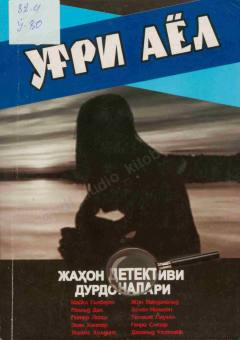

OAJahon detektiv adabiyotining eng sara hikoyalari jamlangan qiziqarli toʻplam.
Ushbu toʻplam jahon adabiyotining taniqli detektiv yozuvchilari qalamiga mansub eng sara hikoyalarni oʻz ichiga oladi. Kitobda turli xil detektiv janridagi asarlar jamlangan boʻlib, oʻquvchilarga xorijiy adiblar ijodi bilan yaqindan tanishish imkonini beradi.